Ravnkilde
Feinkörniger, rötlicher Granit
Höhe über der Erde: 132,5 cm
Größte Breite: 92 cm
Größte Dicke: 33 cm
Runenhöhe: 13 - 18 cm
Runeninschrift :
Gutsverwalter Asser, Köges (?) Sohn, ritzte diese Runen zum Andenken an die Herrin Asbod/Asmod
Runenstein (Foto 27.07. 1988)

37 - Ravnkilde - Letztes Update 24.08.2025
Listennummer : DR 134 / DK NJy 67
| Navidaten: 56.75455 9.75594 oder: Bygaden 2, 9610 Nørager |
Transliteration: ąsur lat:hirþiR : | kukis : sun : raist | runar þasi | at ąs-uþ trunik
Auf einer Reise durch Dänemark kam Horace Marryat (*1818 - 10.03.1887, englischer Autor - eine Fotografie seiner Person findet sich hier)
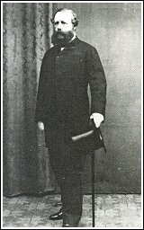
Bildquelle: Silkeborg Archiv - Lizenz: Public Domainim Jahre 1859 an Ravnkilde vorbei (Kurz bevor er am 05. Juli einen Ruhetag in Aalborg einlegte). Er veröffentlichte 1860 die zweibändige Ausgabe "A Residence in Jutland, the Danish Isles and Copenhagen, Band 1 - Band 2". Marryat hatte gerade Schloss Nørlund (ca. 4 km nördlich gelegen) besucht und wollte wahrscheinlich noch die edlen Begräbnisse in der Kirche sehen. Diese war jedoch verschlossen, also ging er in ein Haus in der Nähe und fragte nach dem Schlüssel. "Gå do te' skuelmæjsteren", hieß es, und so kam der Lehrer Christen Sørensen Brøgger (*04.03.1817 in Nibe - 11.04.1900 in Ravnkilde - link-LIVES)
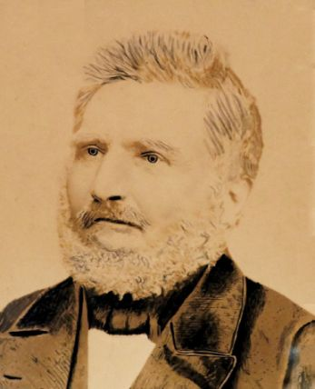
Bildquelle: Ravnkilde Arkiv - Lizenz: Public Domainhinzu, um den Gästen die Kirche zu zeigen. Dabei entdeckte Marryat einen großen Schwellenstein am Eingang der Kirche mit einigen Schriftzeichen darauf, und er fand es schade, dass er da so lag und auf ihm herumgetreten wurde (Band 2, Chapter XXXVIII, S. 130 - "There was another Runic stone lying at the porch entrance of this little church - always been there, the schoolmaster told me."). Kurz nach diesem Besuch wurde der Runenstein auf Veranlassung des Kammerherrn Sigismund Wolf Veit de Mylius (*12.09.1823 - 02.06.1885 - link-LIVES)
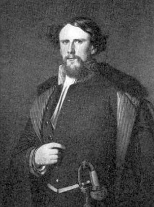
Bildquelle: Danmarks Adels Aaarbog 1956 (S. 637 in der pdf-Datei) - Lizenz: CC-BY-SAvon Schloss Nørlund herausgenommen und im Kirchhof aufgestellt. Vom Kammerherrn Sigismund Volf Veit de Mylius wurde der erste Bericht am 17.03.1860 an das Nationalmuseum mit einer Zeichnung gesandt.
Von einem Mitarbeiter des Antikvarisk-Topografisk Arkiv in Kopenhagen - Tusind tak Dánial - habe ich am 25.11.2024 auf Nachfrage zu diesem de Mylius Bericht zwei Zeichnungen - keinen Bericht - übermittelt bekommen. Allerdings tragen beide Zeichnungen kein Datum/keinen Name. Die kleinere Zeichnung der Rückseite scheidet meines Erachtens sicher aus. Wenn überhaupt kann es sich nur die Wiedergabe der Vorderseite sein.


Heute steht der Runenstein auf einem
ansehnlichen Hügel, der in frühester Zeit Klyngeshøj
genannt wurde - bei der
Kirche von Ravnkilde. Laut dem
Ravnkilde
Archiv gibt es dort keine zeitlichen Informationen
zu der Umsetzung des Runensteins auf den
Grabhügel.
Durch die Schreibweise
verschiedener Runen vermutete
Erik Moltke
(*04.04.1901 - 19.10.1984, Runologe, Historiker
-
link-LIVES)
 Bildquelle: Scan von Buchumschlag "Runerne i Danmark og ders
oprindelse" - Erik Moltke - 1976 - Lizenz:
CC-BY-SA
Bildquelle: Scan von Buchumschlag "Runerne i Danmark og ders
oprindelse" - Erik Moltke - 1976 - Lizenz:
CC-BY-SA
bei seinen Studien einen schwedischen Einschlag. Aufgrund von Abnutzung und einer neuen - nicht veröffentlichten - Studie aus dem Jahr 2004 müssen jedoch sowohl beim Lesen als auch bei der Interpretation Vorbehalte gemacht werden. Der Name "Ásboð" findet sich nur auf zwei Runensteinen, diesem und dem von Brobyholm - Sm 96 - in Schweden - . Im Schwedischen gab es zweifellos ein Missverständnis bezüglich der b-Rune, es hätte eine m-Rune sein sollen. Wenn man außerdem weiß, dass Asmod (mit m) sowohl hier als auch in Schweden ein gebräuchlicher weiblicher Vorname ist, muss man annehmen, dass das "b" im Namen des Runensteins hier eine Fehlinterpretation ist. Wir bemerken auch die Lage des "b", es ist nicht schön in der Mitte der benachbarten Runen gelegen. Wenn es dagegen ein "m" ist, verschwindet dieser Schiefstand und wir landen somit bei dem Namen "Asmod".
Die Inschrift besteht aus vier senkrechten, parallelen Zeilen, die alle von unten nach oben gelesen werden. Die Reihenfolge von rechts betrachtet: 2, 1, 4, 3.
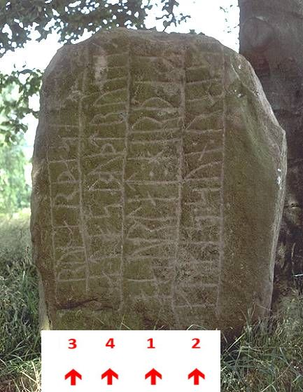
Eigenes Foto vom 27.07.1988 - die linke Runenreihe ist dort noch relativ gut erkennbarDie Steinrückseite ist mit zahlreichen Schalenzeichen übersät, die er lange vor seiner Verwendung als Runenstein erhielt. Die Runeninschrift wird auf die Zeit 900 - 1020 n.Chr. datiert.
Hier habe ich das aktuellste "Skraafoto" - Lizenz: CC BY 4.0 - vom Kirchhof von Ravnkilde vom 17.04.2023 eingefügt. Skråfoto ist eine Webanwendung, die von Klimadatastyrelsen weltweit kostenlos bereitgestellt wird. Die Aufnahmen werden seit 2017 alle zwei Jahre erneuert und neben einer Senkrechtaufnahme wird ein Schrägbild aus jeder Himmelsrichtung angeboten, das man über eine Adresssuche aufrufen kann. Die Aufnahmen wurden von mir am 08.11.2024 als Screenshot gesichert. Das untere Bild zeigt nur den Grabhügel, auf dem man den Runenstein - von mir rot eingekreist - sehr gut erkennen kann, da die Bäume gerade keine Blätter tragen.
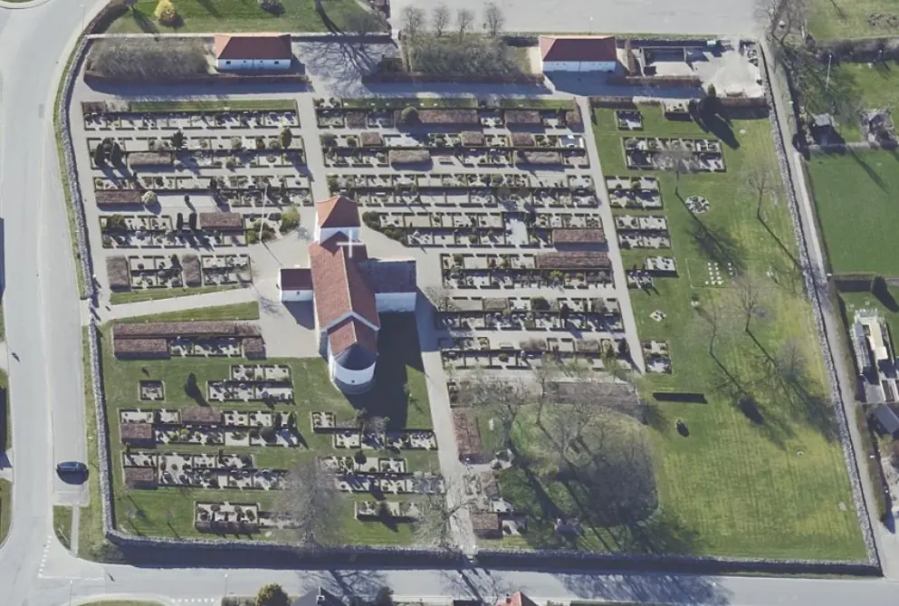
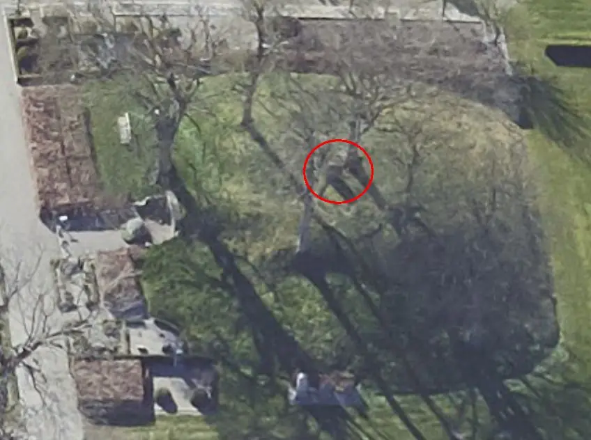
Über die Webseite der Königlichen Bibliothek in Kopenhagen findet sich in der dortigen digitalen Sammlung diese Zeichnung der Kirche von Ravnkilde mit dem Runenstein vom 7.7. 1860 aus der Sammlung des Johan Gottfried Burman Becker (*26.04.1802 - 06.10.1880, Apotheker und Sammler - link-LIVES)
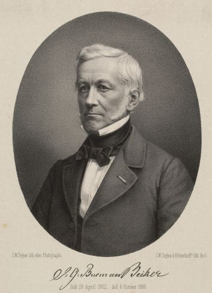
In dem darunter angebrachten handschriftlichen Text steht u.a. dies: "...Paa Kirkegaarden, i det ene Hiørne, en med Gran beplantet Kiæmpehøi, kaldet Klynges Høi. Ved Vaabenhuset staaer en Runesten, der før laae foran Indganden" - übersetzt: "Auf dem Kirchhof steht in einer Ecke ein mit Fichten bepflanzter Grabhügel namens Klynges Hügel. Vor dem Waffenhaus steht ein Runenstein, der früher vor dem Eingang lag."

Prof. P. G. Thorsen (*07.08.1811 - 06.05.1883, Bibliothekar, Runenforscher und Historiker - link-LIVES - Artikel: Levnedsbeskrivelser af de ved Københavns Universitets Firehundredaarsfest promoverede Doktorer, Illustreret Tidende 1882, Nr. 1235 - vom 27.05.1833 / Grabstein in Varde / Eheschließung in Varde am 19. August 1848)
 Fotografie
zw. 1863-1900 von
Fotograf Budtz Müller (*26.12.1837 -
30.12.1884) -
Det Kgl. Biblioteks billedsamling - Lizenz:
Public Domain
Fotografie
zw. 1863-1900 von
Fotograf Budtz Müller (*26.12.1837 -
30.12.1884) -
Det Kgl. Biblioteks billedsamling - Lizenz:
Public Domain
zeigt eine Zeichnung von Prof. Julius Magnus Petersen (*04.09.1827 - 31.01.1917, Archäologischer Zeichner und Restaurator - link-LIVES - Bestattungsprotokoll)
 Bildquelle: Fotografie
von 1903 von Fotograf Marius Christensen
(*24.06.1874 -
25.06.1907) -
Det Kgl. Biblioteks billedsamling - Lizenz:
Public Domain
Bildquelle: Fotografie
von 1903 von Fotograf Marius Christensen
(*24.06.1874 -
25.06.1907) -
Det Kgl. Biblioteks billedsamling - Lizenz:
Public Domain
in seinem Werk "De danske runemindesmærker beskrevne og forklarede, anden Afdeling, Jyllands Runemindesmærker, I. Afbildninger, 1879, Nr. 45" - Scan aus dem in meinem Besitz befindlichen Exemplar (15.02.2025). Seine Forschungsergebnisse bringt er ein Jahr später - 1880 - in seinem Band II - Text - auf den S. 129-130.
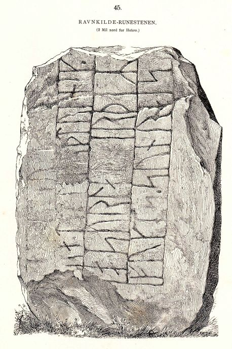
P. G. Thorsens Nachlass (Bezeichnet als: P. G. Thorsens optegnelser, tegninger m.m. vedrørende runer og runemindesmærker - überführt aus der Kopenhagener Universitätsbibliothek 1929 - Gemäß Ministerialschreiben vom 04.03.1929; früher benannt als Additamenta 612 kvart - findet sich heute in der Königlichen Bibliotek unter NKS 3296 (in mehreren einzelnen Pappschachteln). In der Schachtel mit der Nummer 17 fand ich bei meinem dortigen Besuch am 27.09.2022 diese Zeichnung von Magnus Petersen, die dieser auf den 29.06.1870 datiert hat.

Prof. Ludv. F. A. Wimmer (*07.02.1839 - 29.04.1920, Philologe und Runenforscher - link-LIVES - Politiets registerblade - Bestattungsprotokoll)
 Bildquelle:
Fotografie zw. 1877-1900 von Fotograf Hansen & Weller
-
Det Kgl. Biblioteks billedsamling - Lizenz:
Public Domain
Bildquelle:
Fotografie zw. 1877-1900 von Fotograf Hansen & Weller
-
Det Kgl. Biblioteks billedsamling - Lizenz:
Public Domain
fasst seine Untersuchungen in seinem großformatigen Runenwerk "De danske runemindesmærker undersøgte og tolkede af Ludv. F. A. Wimmer, Andet Bind, Runestenene i Jylland og på øerne. 1899-1901, Nr. 22, S. 134" zusammen - eigener Scan.
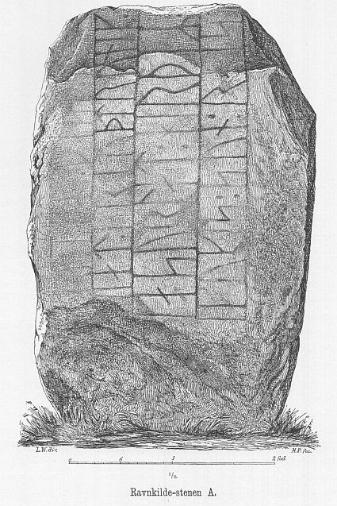
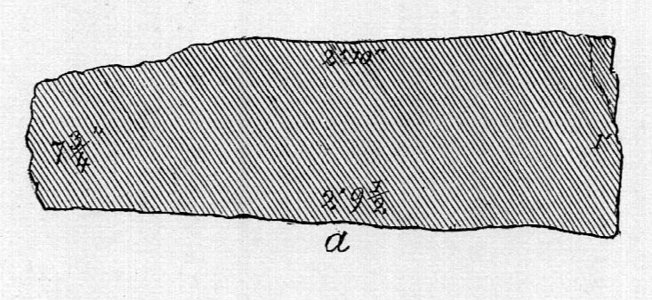
Eine Zeichnung der Steinform mit Maßangaben - rechts - findet sich auch noch bei Ludv. F.A. Wimmer. Er hat den Runenstein persönlich vor Ort am 06. August 1878 und nochmals am 21.07.1882 begutachtet. Bei seinem ersten Besuch beklagt er extrem schlechtes Wetter, das ihm eine genauere Untersuchung der Inschrift sehr erschwerte, bzw. unmöglich machte. Vier Jahre später zeigte er sich aber von sehr guten Verhältnissen - ...die hervoragende Beleuchtung am Mittag... - angetan. Er spricht aber davon, dass die linke der vier Runenreihen nahezu unkenntlich sei.
Ludv. F. A. Wimmer hat seine jahrelangen Aufzeichnungen der "Kgl. Bibliotek" in Kopenhagen überlassen. Ein Verzeichnis darüber wurde 1915 in Buchform herausgegeben - "Collectio runologica Wimmeriana: Fortegnelse over Ludv. F. A. Wimmers runologiske o. a. Samlinger i Det kgl. Bibliotek"
In seinen Unterlagen in der Bibliothek befinden sich unter "III - Originaltegninger af de danske Runemindesmærker, udførte paa Undersøgelsesrejserne af Magn. Petersen og kontrollerede paa Stedet af Ludv. Wimmer, samt Prøvetryk af de paa Grundlag af de nævnte Tegninger, Aftryk o. s. v. til De danske Runemindesmærker" udførte Afbildninger med Wimmers Rettelser"


zu dem Runenstein von Ravnkilde unter der Nr. 36 Aufzeichnungen von 1878/1882, wobei ich am 27.09.2022 diese beiden Zeichnungen von Magnus Petersen - jeweils datiert auf den 06.08.1878 - fotografieren durfte.


Durch Erik Moltke wurden diese sw Fotografien des Runensteins am 18.05.1931 aufgenommen.
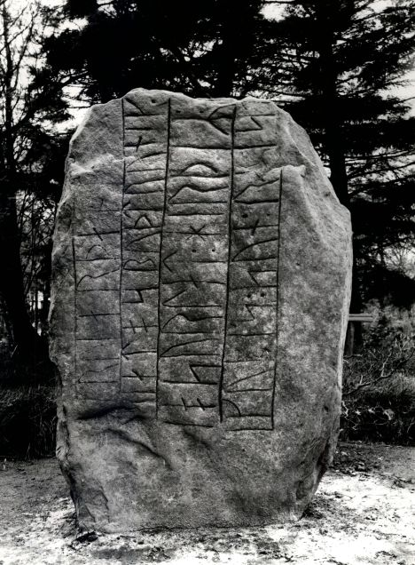
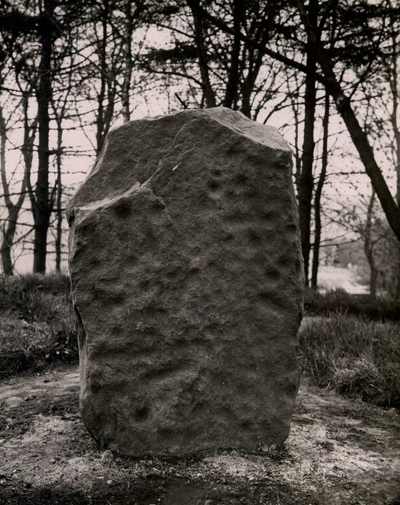
Quelle: Digitale Sammlung des Nationalmuseums in Kopenhagen - Lizenz: CC-BY-SA
Im Vorfeld zu dem 2016 erschienenen Buch von Lisbeth M. Imer (*1973, Runologin am Nationalmuseum Kopenhagen) "Danmarks Runesten - en fortælling" reiste sie mit dem Fotografen Roberto Fortuna zur Bestandsaufnahme durch die Lande. Dieser hat die Runensteine mit Schräglicht aufgenommen und darüber wirklich herausragende Fotos erzielt. Diese Fotografien stammen vom 02.10.2014.
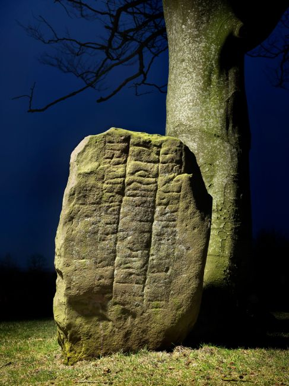
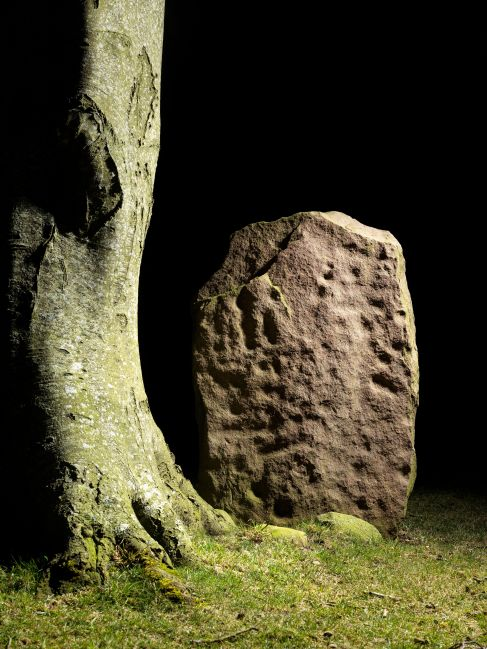
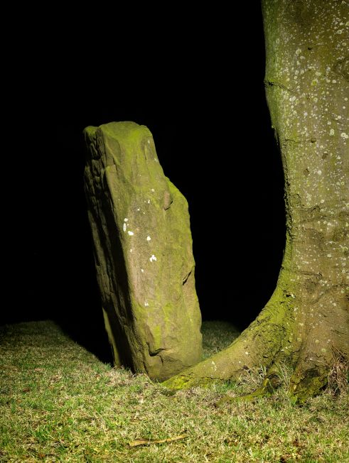
Quelle: Digitale Sammlung des Nationalmuseums in Kopenhagen - Lizenz: CC-BY-SA
Bei meinem Besuch am 23.08.2013 konnte ich diese Fotografien fertigen (per Mausklick zur Vergrößerung):
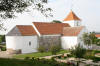 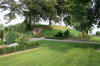 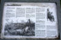 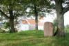 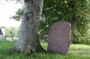 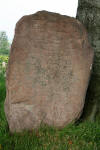 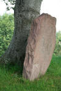 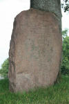


Die zunehmende Verwitterung ist inzwischen ganz deutlich zu sehen. Während mein einfaches Foto aus dem Jahr 1988 eigentlich noch alle Runenzeichen abbildet, ist das selbst bei der Hightech-Aufnahme von Herrn Fortuna aus 2014 längst nicht mehr der Fall. Es verwundert mich, dass man den Runenstein nicht längst auf Geheiß des Nationalmuseum in Kopenhagen unter dem Aspekt "Denkmalschutz" in die nahegelegene Kirche überführt. So ist es ja auch bereits im Oktober 2015 in Giver geschehen! Wenn man meine Aufnahmen aus 08/2013 mit denen von Herrn Fortuna aus 10/2014 vergleicht, fällt einem sofort der heftige Grünbelag (Algen und Moos, feuchte, schattige Lage) auf. Der kann auch nicht innerhalb eines Jahres so heftig zugelegt haben. Der Stein wird also offenbar immer mal wieder geputzt.
Im Rahmen meiner 2022er Jütland Wikingertour war ich am Donnerstag, 02.06.2022, vor Ort. Dabei konnte ich diese Fotografien machen.
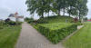 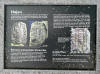 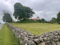 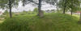 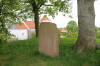 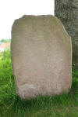 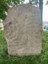 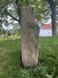 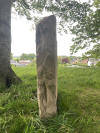 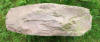


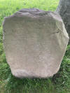 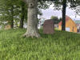 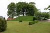 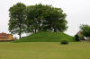 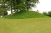 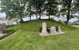 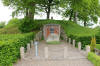


Meiner Einschätzung nach hat die Erkennbarkeit der Inschrift nochmals deutlich gelitten und es bleibt abzuwarten, bis sie völlig verwittert und unlesbar geworden ist. Aus der neuen Infotafel ist ersichtlich, dass seitens des Nationalmuseum in Kopenhagen in 2015 Untersuchungen/Probebohrungen zu dem Grabhügel unternommen wurden und man ihn darüber in die Bronzezeit datiert (2200 bis 800 v. Chr.).
Den Eintrag zu diesem Runenstein aus der dänischen Runen Datenbank im Internet kann man hier abrufen.
Die Informationen in "Fund og Fortidsminder" zu dem Runenstein finden sich hier.
Über diesen Link finden sich zu dem Runenstein Informationen des Forschungsprojektes "Runes" der Akademie der Wissenschaften zu Göttingen.
In diesen Artikeln geht es auch um den Runenstein von Ravnkilde 1:
Michael Lerche Nielsen: Swedish Influence in Danish Runic Inscriptions In: Klaus Düwel, Edith Marold, Christiane Zimmermann, (Hrsg.): Von Thorsberg nach Schleswig. Sprache und Schriftlichkeit eines Grenzgebietes im Wandel eines Jahrtausends. Internationales Kolloquium im Wikinger Museum Haithabu vom 29. September 3. Oktober 1994, Berlin, Boston: De Gruyter 2001, S. 127148 - leider nicht online zugänglich - hier einige Seiten als Leseprobe.
Lena Peterson: Nordiskt Runnamnslexikon. Uppsala 2007, S. 32 und S. 156.
Über diese Webseite finden sich auch interessante Informationen zu diesem Runenstein in dänischer Sprache. Erst darüber stieß ich auf einige mir unbekannte Infos zu den Fundumständen und der Lesung der Inschrift.
Über Google StreetView kann man sich aktuell - 26.09.2021 - u.a. diese Ansicht der Kirche mit dem Grabhügel und dem Runenstein darauf anschauen.
Vom "Ravnkilde Arkiv", von Helge Gårn, wird über die Webseite "arkiv.dk" ein Film (ca. 8:15 Minuten) - aus einer Powerpoint Präsentation entstanden - aus dem Jahr 2010 mit dem Titel "Om runestenen Ravnkilde 1 i forbindelse med kirken og dennes bygningshistorie" angeboten.